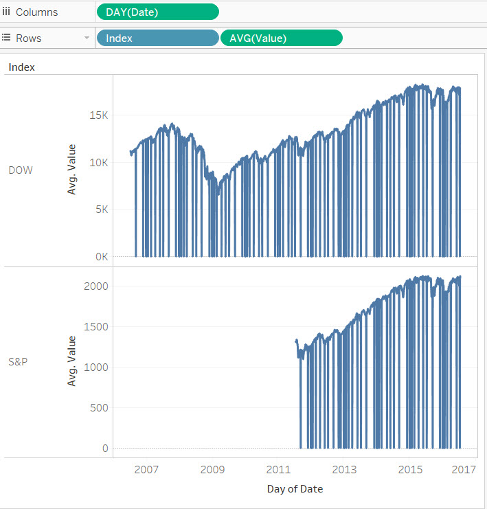
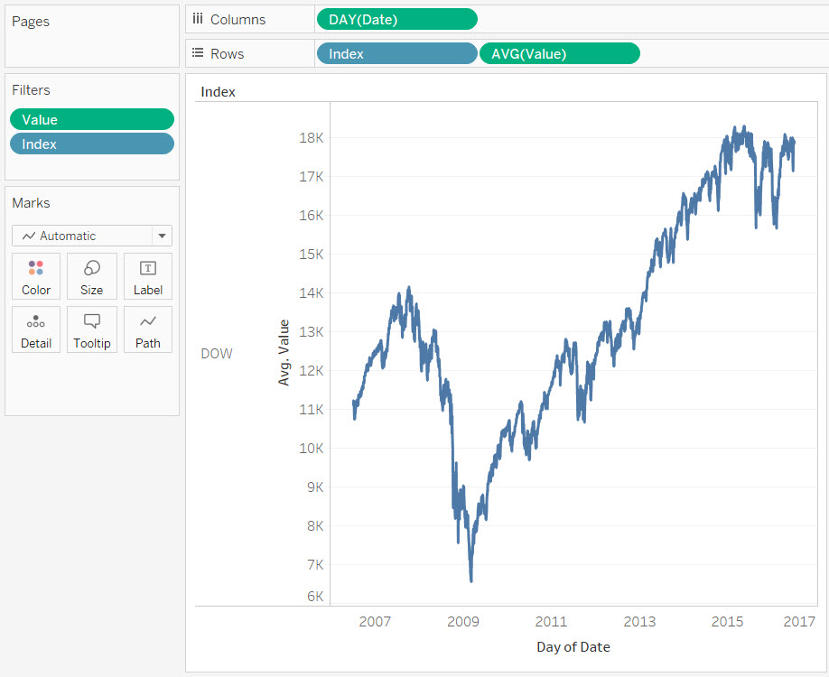
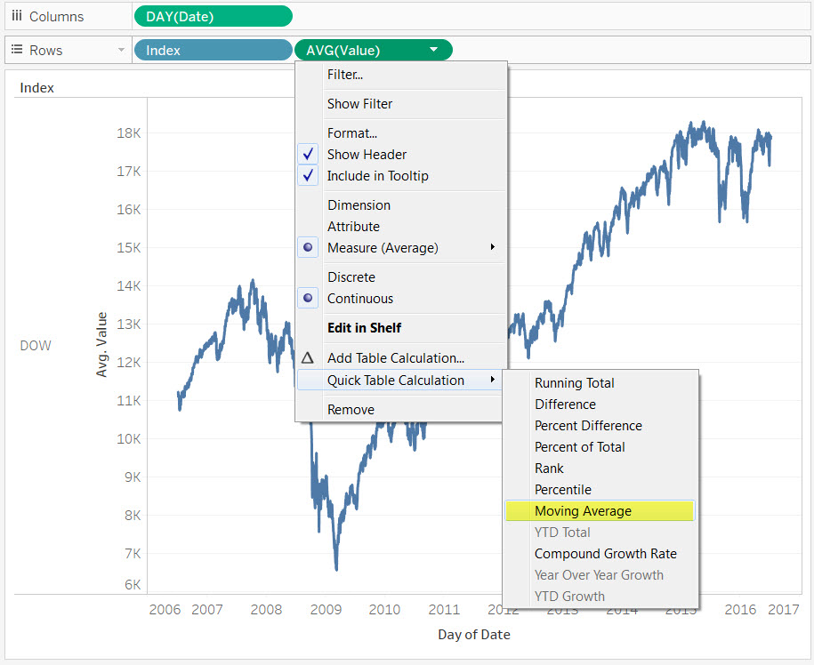
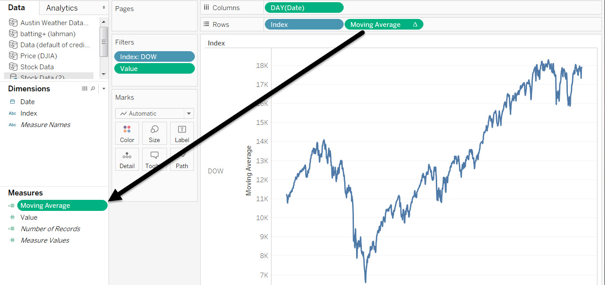
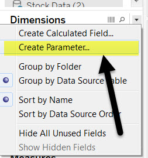
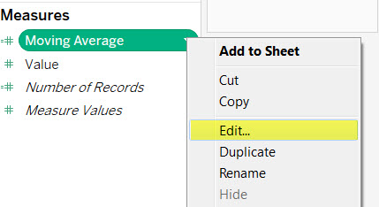
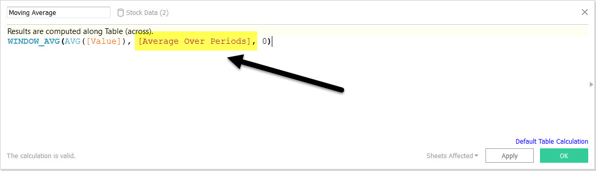
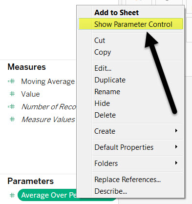
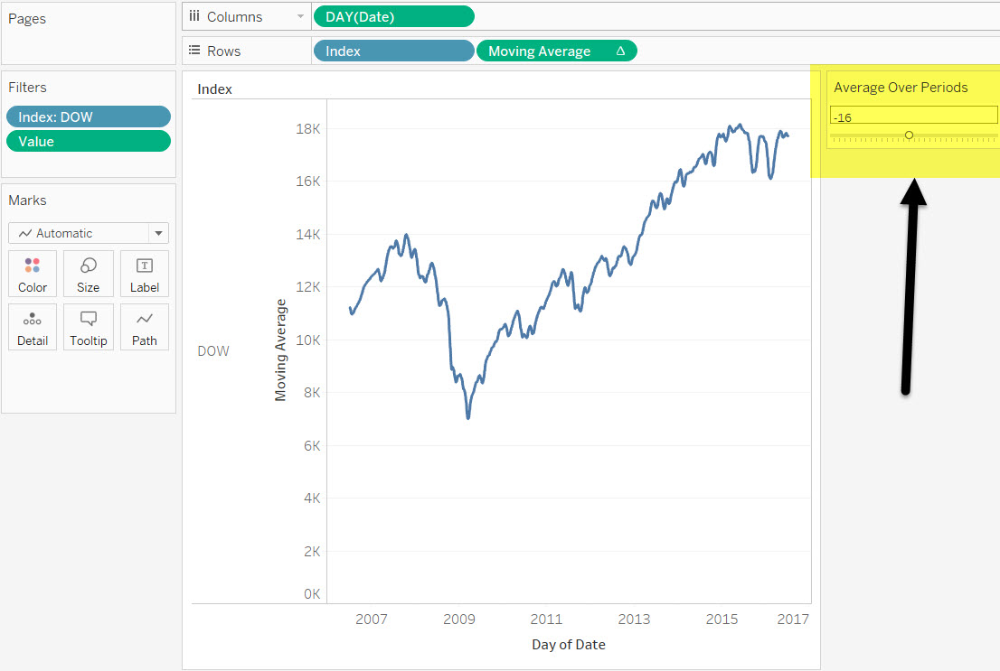

Looking at our Dow Stock ticker data, let's overlay a Moving Average onto the Value line chart, and insert a parameter allowing us to change how many periods the Moving Average is computed over.
1 Set the Initial View
1. Bring Day(Date) (Continous) To the Columns shelf
2. Bring Index to Rows
3. Bring Avg(Value) To Rows

2 Add Filters
1. Add index to Filters and select only the DOW
2. Add Value to Filters and increase the bottom of the range to eliminate the 0's (weekends)

3 Apply the Moving Average Table Calculation

4 Materialize the Calculation
1. Drag the Value pill with the Table Calculation applied to it down to the measures sections
2. Name it 'Moving Average'

5 Create a parameter
1. Select 'Create Parameter' from the Dimensions Dropdown
2. Name it "Average Over Periods'
3. Select Integer Data type
4.Select 'Range' for allowable values
5. Select "Minimum' in the Range and set it to -30
6. Select 'Maximum' in the Range and set it to 0
7. Click 'Ok'

6 Edit the Moving Average Calculation
1. Right click on "Moving Average" in the Measures Pane
2. Select Edit

7 Change to Previous Value to the new Parameter
1. Highlight the '-2' that represents the previous values
2. Start typing 'Average Over Periods'
3. Select the value that shows up
4. A purple "[Average Over periods]" will now appear as the previous values

8 Show the Parameter Control
1. Right Click on the Average Over Periods Parameter
2. Select "Show Parameter Control"

9 Final View
Now as you adjust the parameter control the Moving Average will adjust
